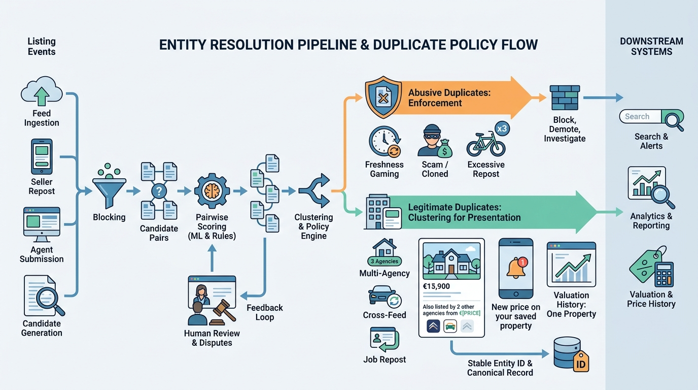

Part III — SUPPLY: Getting Inventory In
One Property, Three Listings: Duplicates and Entity Resolution

Image generated by Google Gemini (gemini-3-pro-image-preview)
Part III — SUPPLY: Getting Inventory In

Image generated by Google Gemini (gemini-3-pro-image-preview)